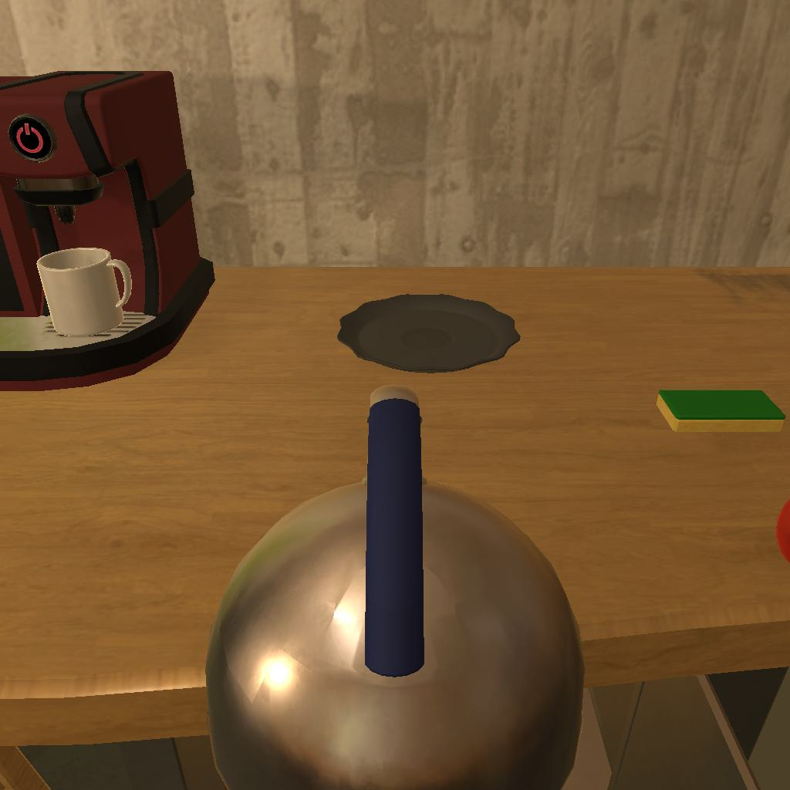

---------------------------------------------------------task: 26---------------------------------------------------------
--------------------------------------------------------------------------------------------------------------------------------------------------------------------
--------------------------------------------------------------------------------------------------------------------------------------------------------------------
Step:--------------------------------------------------------------------------18-------------------------------------------------------------------------------
----------------------------------------
VLM Prompt:
Image1:
Image2:
Image3:
**Instruction**
1. Analyze the provided images to identify all visible household objects and compare the difference between images (e.h. whether the object is opened or not and taken on hand or not), focusing on those relevant to the task description "find two kettle and put them in cabinet."
2. Use the analysis of images and the task hint "The agent must find an object of the desired type, pick it up, find the correct location to place it, put it down there, then look for another object of the desired type, pick it up, return to previous location, and put it down there with the other object." to answer the question: what is the most reasonable action in the choices for the task description "find two kettle and put them in cabinet"?
3. Decide and write the answer using the template: The answer is: (i): , where i is the real number. If there is no desired object in images, search every place based on **Initial Observation** to find the object. And if no one is exactly correct, choose a similar answer.
**Initial Observation**
You are in the middle of a room. Looking quickly around you, you can see countertop (1), coffeemachine (1), cabinet (1-4), drawer (1-8), sink (1), sinkbasin (1), garbagecan (1), fridge (1), microwave (1), dresser (1), sidetable (1)
**Answer Choices**
(1): go to countertop 1
(2): go to coffeemachine 1
(3): go to cabinet 2
(4): go to drawer 1
(5): go to sink 1
(6): go to sinkbasin 1
(7): go to cabinet 3
(8): go to garbagecan 1
(9): go to cabinet 4
(10): go to drawer 2
(11): go to fridge 1
(12): go to microwave 1
(13): go to dresser 1
(14): go to sidetable 1
(15): go to drawer 3
(16): go to drawer 4
(17): go to drawer 5
(18): go to drawer 6
(19): go to drawer 7
(20): go to drawer 8
(21): open cabinet 1
(22): close cabinet 1
(23): put kettle 1 in/on cabinet 1
(24): examine cabinet 1
**Answer**
Let's think step by step by following the instructions.
----------------------------------------
----------------------------------------
Original Response:
Image Analysis:
- Image 1 and Image 2 both show the same objects on the countertop, which include a loaf of bread, a kettle with a blue handle, a bowl with apples, and a green vegetable.
- Image 3 shows the same kettle with a blue handle but from a different angle, and also shows a coffeemaker with a cup and a coffee pod holder on the countertop.
Comparing the images, there are no significant changes between Image 1 and Image 2. Image 3 seems to be taken from a different perspective, but the objects remain the same. There is no indication of the objects being opened or taken by hand.
Task Analysis:
The task is to find two kettles and put them in a cabinet. From the images, we can see one kettle on the countertop. Since the task requires two kettles, we would need to search for another kettle. The initial observation mentions various locations like cabinets, drawers, and appliances where the second kettle may be found.
Based on the given information and the task hint, the most reasonable action to start with would be to check cabinets, as they are the most likely place to store a kettle. Since we already see one kettle on the countertop, it's not necessary to go there. Therefore, we should check the cabinets that have not been mentioned in the images.
The answer is: (9): go to cabinet 4
----------------------------------------
----------------------------------------
>>> Refine Original VLM Response and Get Pure Action: go to cabinet 4
----------------------------------------
-----------------------------------------------------------------
Running time: 13.056006669998169 seconds
Total Money: 16.719299999999993
-----------------------------------------------------------------
-----------------------------------------------------------------
Text Observation:You arrive at loc 9. The cabinet 4 is closed.
-----------------------------------------------------------------
UNSUCCEED